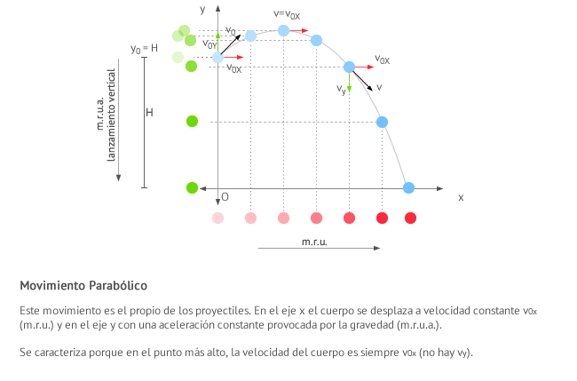

Tiro Parabólico
El movimiento parabólico, también conocido como tiro oblicuo, es un ejemplo de composición de movimientos en dos dimensiones: un m.r.u. en el eje horizontal y un m.r.u.a. en el eje vertical. En este apartado estudiaremos:
- El concepto y la representación de movimientos parabólicos
- Sus ecuaciones
- La altura máxima que alcanza un cuerpo que se mueve según movimiento parabólico
- El tiempo que está en el aire
- El alcance
- El ángulo de la trayectoria
Concepto y representación
El movimiento parabólico, también conocido como tiro oblicuo, consiste en lanzar un cuerpo con una velocidad que forma un ángulo α con la horizontal. En la siguiente figura puedes ver una representación de la situación.

El movimiento parabólico o tiro oblicuo resulta de la composición de un movimiento rectilíneo uniforme (mru horizontal) y un movimiento rectilíneo uniformemente acelerado de lanzamiento hacia arriba o hacia abajo (mrua vertical).
El cuerpo en movimiento parabólico puede ser cualquier cosa: una pelota de futbol, de tenis, un dardo, un misil... a todos ellos los denominaremos de manera genérica proyectiles.
En física suele denominarse proyectil a cualquier cuerpo lanzado en el espacio por la acción de una fuerza, aunque en castellano suele utilizarse este término especialmente para aquellos lanzados con un arma.
Ecuaciones
Las ecuaciones del movimiento parabólico son:
-
Las ecuaciones del m.r.u. para el eje x
-
Las ecuaciones del m.r.u.a. para el eje y
Dado que, como dijimos anteriormente, la velocidad forma un ángulo α con la horizontal, las componentes x e y se determinan recurriendo a las relaciones trigonométricas más habituales:
Finalmente, teniendo en cuenta lo anterior, que y0 = H , x0 = 0, y que ay = -g , podemos reescribir las fórmulas tal y como quedan recogidas en la siguiente lista. Estas son las expresiones finales para el cálculo de las magnitudes cinemáticas en el movimiento parabólico o tiro oblicuo:
- Posición (m)
-
Eje horizontal
-
Eje vertical
-
- Velocidad (m/s)
-
Eje horizontal
-
Eje vertical
-
- Aceleración (m/s2)
-
Eje horizontal
-
Eje vertical
-
Ecuación de posición y de trayectoria en el movimiento parabólico
La ecuación de posición de un cuerpo nos sirve para saber en qué punto se encuentra en cada instante de tiempo. En el caso de un cuerpo que se desplaza en dos dimensiones, recuerda que, de forma genérica, viene descrita por:
Sustituyendo las expresiones anteriores de la posición en el eje horizontal (m.r.u.) y en el eje vertical (m.r.u.a.) en la ecuación de posición genérica, podemos llegar a la expresión de la ecuación de posición para el movimiento parabólico.
La ecuación de posición del movimiento parabólico viene dada por:
Por otro lado, para saber qué trayectoria sigue el cuerpo, es decir, su ecuación de trayectoria, podemos combinar las ecuaciones anteriores para eliminar t, quedando:
Como cabía esperar, se trata de la ecuación de una parábola.
Por otro lado, será frecuente que en los ejercicios te pidan alguno de los siguientes valores.
Altura máxima
Este valor se alcanza cuando la velocidad en el eje y, vy , vale 0. A partir de la ecuación de velocidad en el eje vertical, e imponiendo vy = 0, obtenemos el tiempo t que tarda el cuerpo en llegar a dicha altura. A partir de ese tiempo, y de las ecuaciones de posición, se puede calcular la distancia al origen en el eje x y en el eje y.
Tiempo de vuelo
Se calcula igualando a 0 la componente vertical de la posición. Es decir, el tiempo de vuelo es aquel para el cual la altura es 0 (se llega al suelo).
Alcance
Se trata de la distancia máxima en horizontal desde el punto de inicio del movimiento al punto en el que el cuerpo impacta el suelo. Una vez obtenido el tiempo de vuelo, simplemente, sustituye en la ecuación de la componente horizontal de la posición.
Ángulo de la trayectoria
El ángulo de la trayectoria en un determinado punto coincide con el ángulo que el vector velocidad forma con la horizontal en ese punto. Para su cálculo obtenemos las componentes vx y vy y gracias a la definición trigonométrica de tangente de un ángulo, calculamos α: